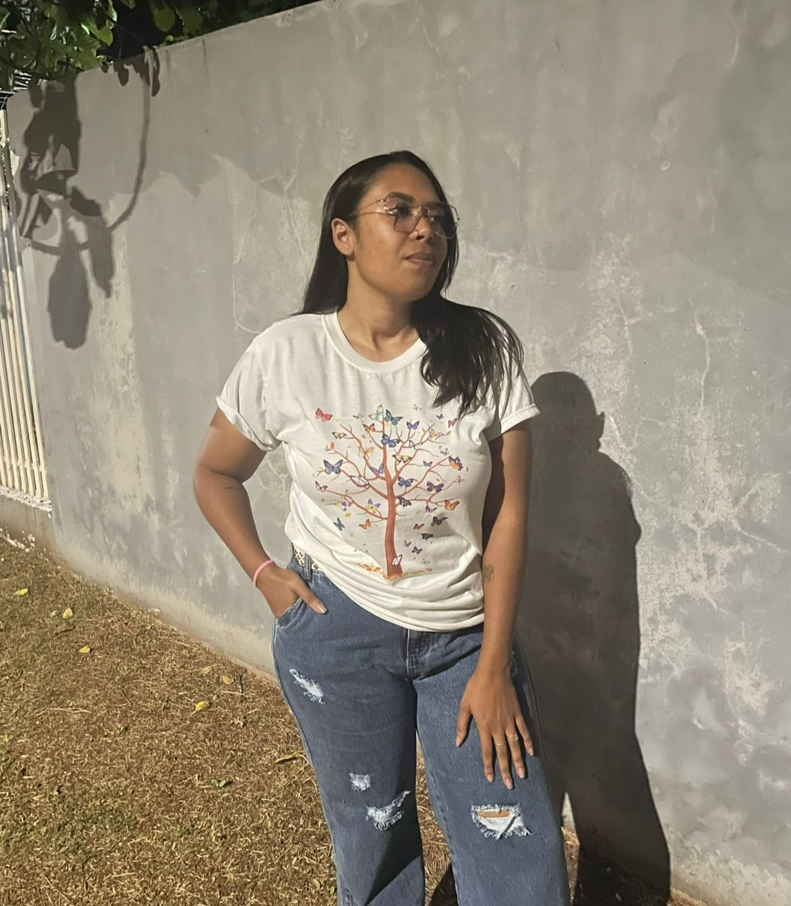
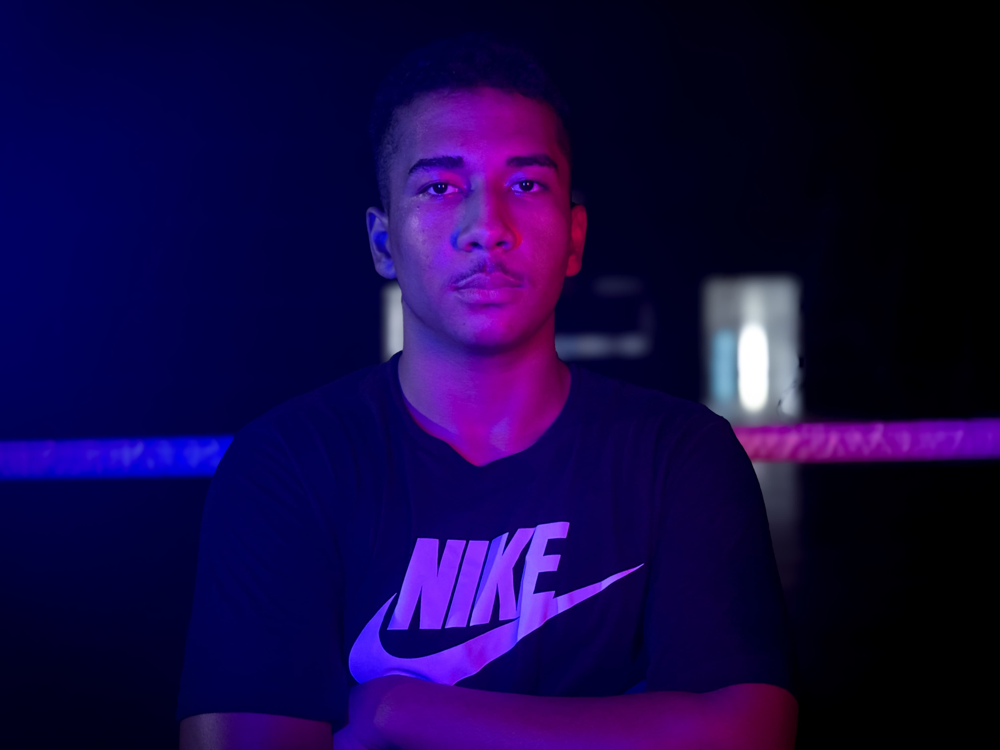

O Propósito do Projeto
O ReciclaTech nasceu da necessidade de conscientizar e facilitar o descarte correto de resíduos tecnológicos em nossa região. Sabemos que o lixo eletrônico possui componentes altamente poluentes, mas que também carregam um enorme potencial de reaproveitamento. Nossa missão é construir uma ponte acessível entre o cidadão comum e os pontos de coleta autorizados, fortalecendo a economia circular e protegendo o meio ambiente para as próximas gerações.
Equipe 1: Gestão, Qualidade e UX
Arthur Sauer
🔗 GitHub QA & VersionamentoResponsável pelo versionamento do código, além de verificar, testar o sistema e reparar pequenos erros para garantir a estabilidade do projeto.
Manuela Polla Ickert
🔗 GitHub Design, UX & VersionamentoResponsável pelo design de interface e pela experiência do usuário (UX), trabalhando também ativamente no versionamento do código da aplicação.
Equipe 2: Desenvolvimento & Relações Externas
Jeniffer Kauana
🔗 GitHub Dev & LogísticaAtuou no desenvolvimento front-end (HTML, CSS, JavaScript) e esteve à frente da divulgação e das negociações para conseguir os containers de coleta eletrônica para a faculdade.
Julia Izadora
🔗 GitHub Dev & LogísticaTrabalhou na codificação em HTML, CSS e JavaScript, além de gerenciar os processos externos do projeto, incluindo campanhas de divulgação e a logística dos containers físicos de coleta.
Maria Eduarda
🔗 GitHub Dev & LogísticaFocou no desenvolvimento de software do site (HTML/CSS/JS) e na captação de recursos, sendo peça-chave para viabilizar os containers de descarte de e-lixo na instituição.
Equipe 3: Desenvolvimento & Integração de APIs

[ Foto Lariessa ]Lariessa Wolff
🔗 GitHub Dev & Pesquisa de APIsResponsável pela codificação front-end (HTML, CSS e JS) e focada na busca, mapeamento e pesquisa técnica de integrações e APIs para o sistema.

[ Foto Gean ]Gean M.R. Santos
🔗 GitHub Dev & Pesquisa de APIsTrabalhou ativamente na escrita de códigos em HTML, CSS e JavaScript, além de realizar o levantamento de tecnologias e pesquisas de viabilidade de APIs.
Lucas Vieira
🔗 GitHub Dev & Pesquisa de APIsResponsável pela codificação front-end (HTML, CSS e JS) e focada na busca, mapeamento e pesquisa técnica de integrações e APIs para o sistema.